Tonemapping review evidence
Retained labeled comparison sheets and region crops. See README.md for scope and original full-resolution evidence limits.
highlight-softclip-expanded/historical-selection.png
highlight-softclip-expanded/immaculate-2-72-comparison.png
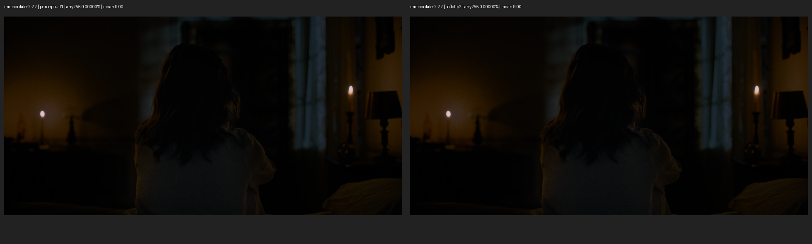
highlight-softclip-expanded/immaculate-2-72-regions.png
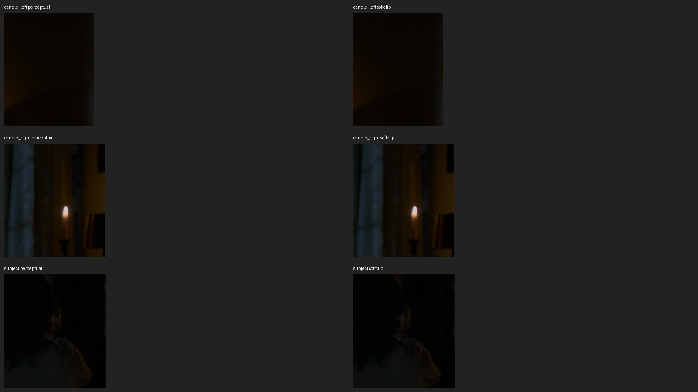
highlight-softclip-expanded/spiderverse-2-72-comparison.png
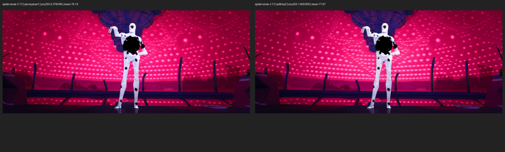
highlight-softclip-expanded/spiderverse-2-72-regions.png
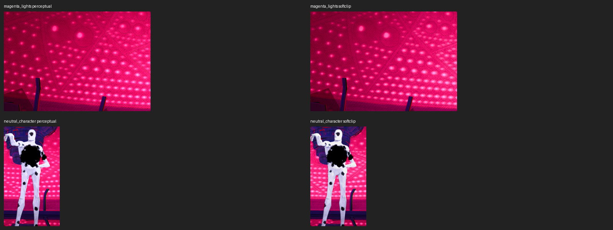
highlight-softclip-expanded/spiderverse-3-72-comparison.png
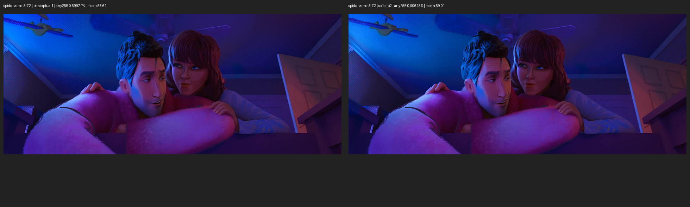
highlight-softclip-expanded/spiderverse-3-72-regions.png
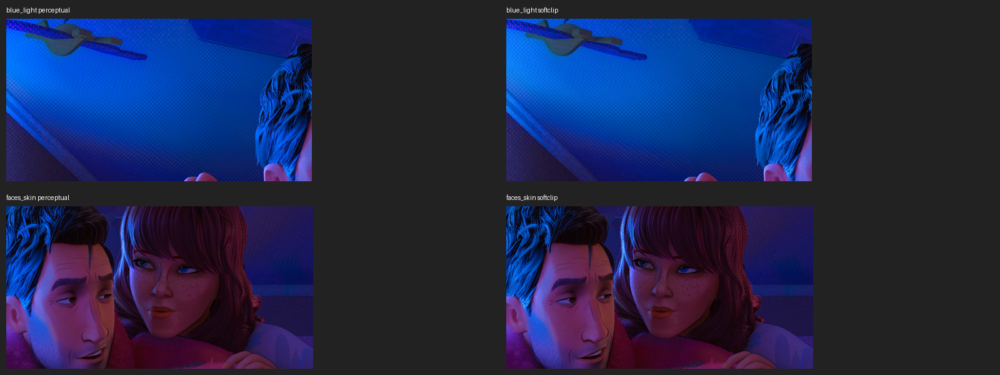
highlight-softclip-expanded/substance-2-72-comparison.png
highlight-softclip-expanded/substance-2-72-regions.png
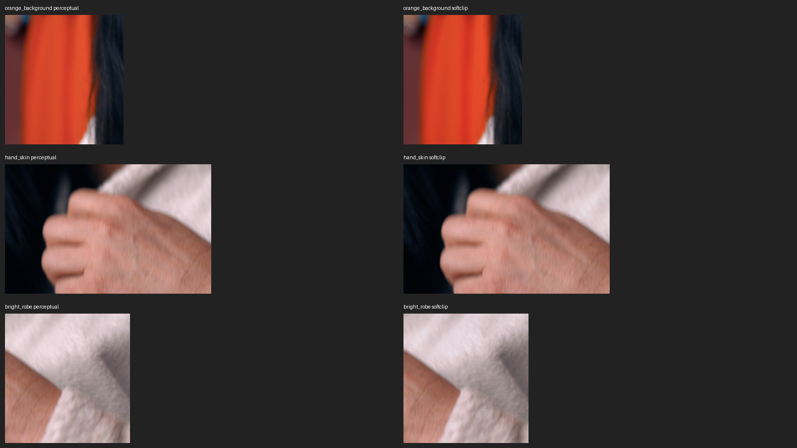
highlight-softclip-expanded/substance-3-72-comparison.png
highlight-softclip-expanded/substance-3-72-regions.png
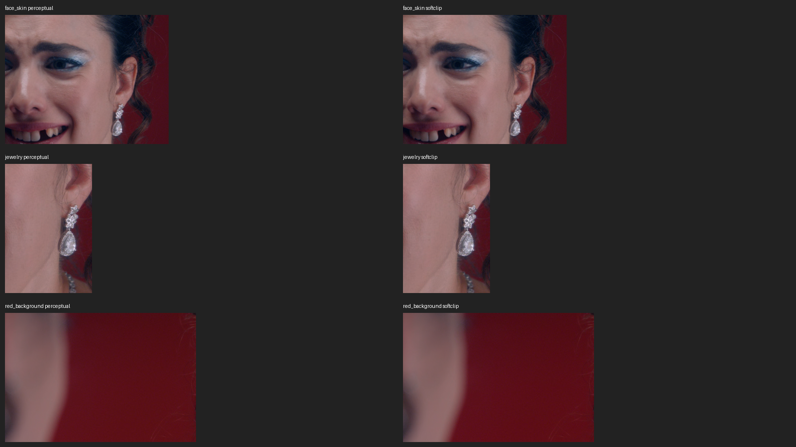
highlight-study/real-media/closeup-labeled.png
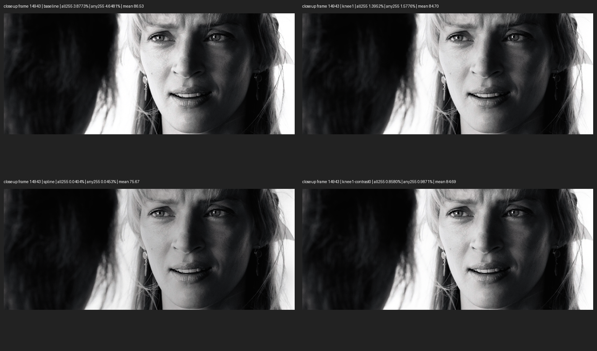
highlight-study/real-media/dark-labeled.png
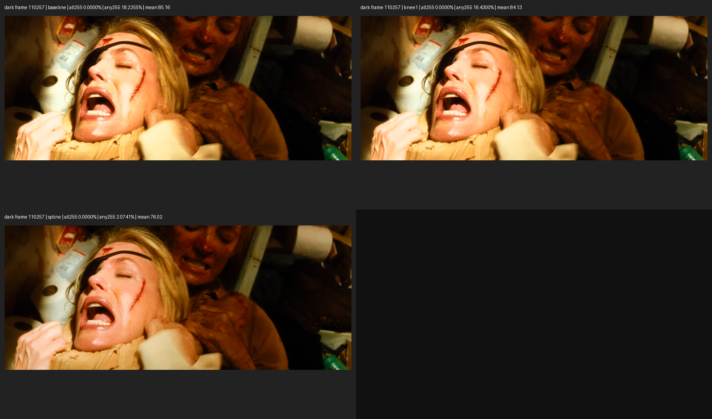
highlight-study/real-media/immaculate-labeled.png
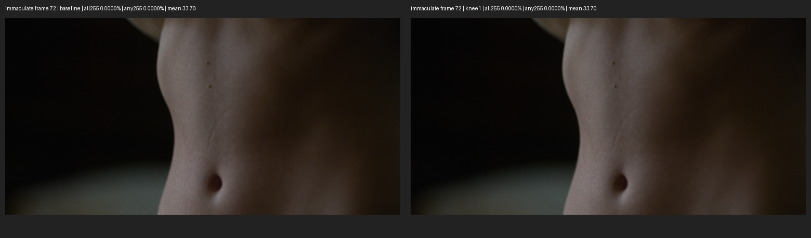
highlight-study/real-media/porch-labeled.png
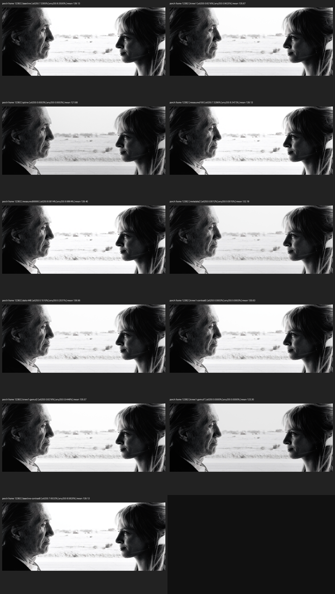
highlight-study/real-media/spiderverse-labeled.png
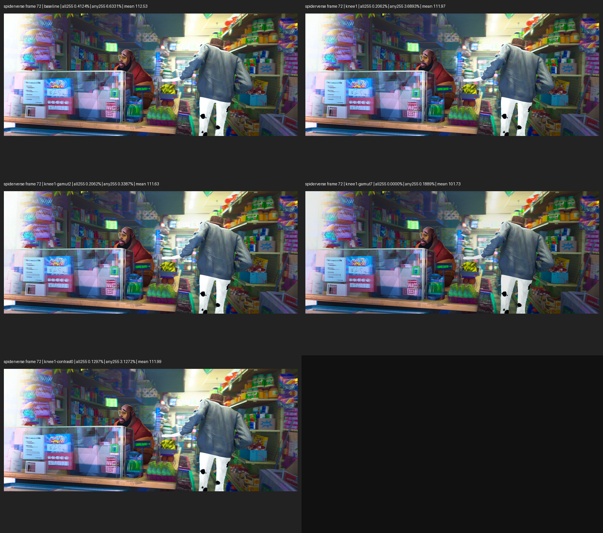
highlight-study/real-media/substance-labeled.png
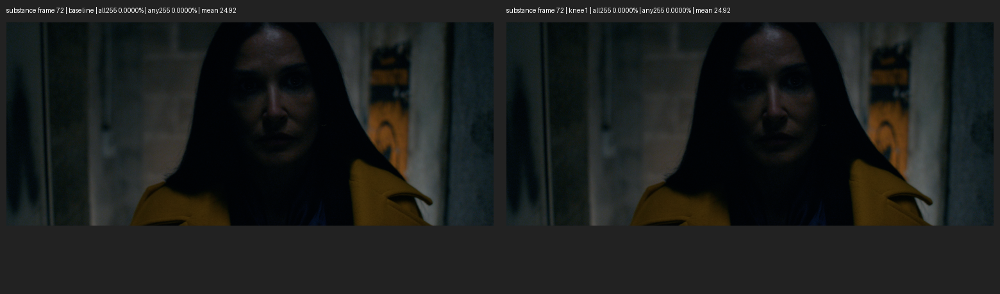